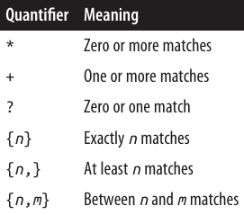
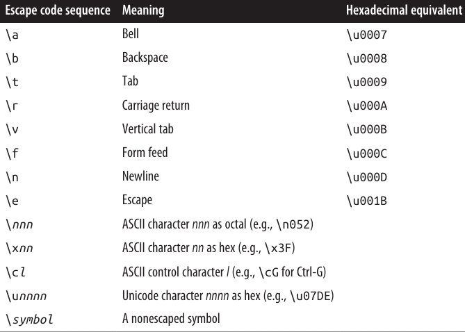
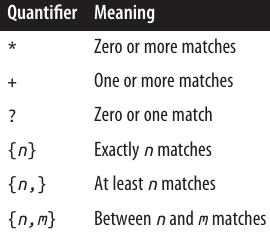
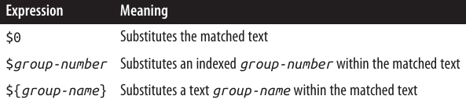
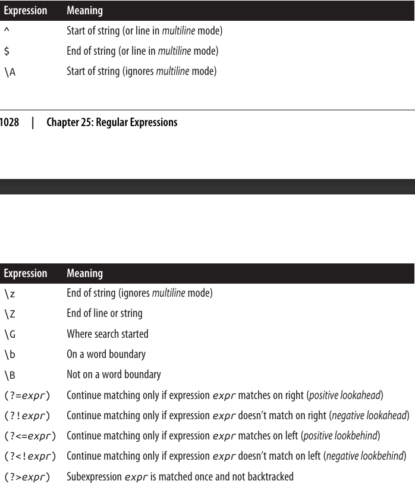
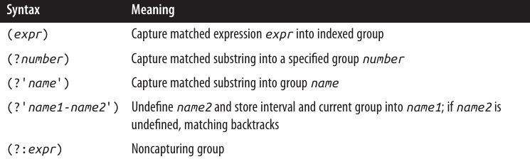
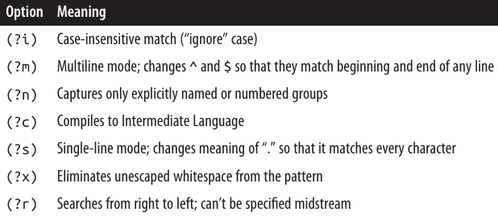

فصل بیست و پنجم: Regular Expressions
زبان Regular Expressions الگوهای کاراکتری را شناسایی میکند. تایپهای .NET که از Regular Expressions پشتیبانی میکنند، بر اساس Perl 5 Regular Expressions ساخته شدهاند و هم قابلیت جستجو (search) و هم جستجو/جایگزینی (search/replace) را پشتیبانی میکنند.
Regular Expressions برای کارهایی مثل موارد زیر استفاده میشوند:
- ✅ اعتبارسنجی ورودی متنی مثل رمز عبور یا شماره تلفن
- ✅ تجزیه دادههای متنی به فرمهای ساختارمندتر (مثلاً یک رشته نسخه NuGet)
- ✅ جایگزینی الگوهای متنی در یک سند (برای مثال فقط کلمات کامل)
این فصل به دو بخش تقسیم شده است:
- بخشهای مفهومی برای آموزش مبانی Regular Expressions در .NET.
- بخشهای مرجع که زبان Regular Expressions را توضیح میدهد.
تمام تایپهای Regular Expression در فضای نام System.Text.RegularExpressions تعریف شدهاند.
📌 نمونههای این فصل از قبل در LINQPad بارگذاری شدهاند. این ابزار همچنین یک ابزار تعاملی برای Regular Expressions دارد (کلیدهای Ctrl+Shift+F1). یک ابزار آنلاین هم در دسترس است: 🌐 http://regexstorm.net/tester.
🧩 مبانی Regular Expression
یکی از رایجترین عملگرهای Regular Expression چیزی است به نام Quantifier (تکرارگر).
علامت ? یک Quantifier است که آیتم قبلی را ۰ یا ۱ بار تطبیق میدهد. به عبارت دیگر ? به معنای «اختیاری بودن» است.
🔹 یک آیتم میتواند یک کاراکتر ساده یا یک ساختار پیچیده از کاراکترها داخل کروشهها [] باشد.
مثال: عبارت "colou?r" میتواند color و colour را تطبیق دهد، اما colouur را نه:
Console.WriteLine (Regex.Match ("color", @"colou?r").Success); // True
Console.WriteLine (Regex.Match ("colour", @"colou?r").Success); // True
Console.WriteLine (Regex.Match ("colouur", @"colou?r").Success); // False
متد Regex.Match در یک رشته بزرگتر جستجو میکند. شیء برگرداندهشده ویژگیهایی مثل Index (مکان شروع تطبیق)، Length (طول تطبیق)، و Value (رشته واقعی تطبیق دادهشده) دارد:
Match m = Regex.Match ("any colour you like", @"colou?r");
Console.WriteLine (m.Success); // True
Console.WriteLine (m.Index); // 4
Console.WriteLine (m.Length); // 6
Console.WriteLine (m.Value); // colour
Console.WriteLine (m.ToString()); // colour
میتوانید به Regex.Match مثل نسخه قویتر متد IndexOf در رشته نگاه کنید. تفاوت این است که Regex.Match بهجای رشتهی ثابت، یک الگو را جستجو میکند.
متد IsMatch یک میانبر است برای صدا زدن Match و سپس بررسی ویژگی Success.
🔸 موتور Regular Expressions به صورت پیشفرض از چپ به راست کار میکند، بنابراین فقط اولین تطبیق بازگردانده میشود.
با متد NextMatch میتوان تطبیقهای بعدی را گرفت:
Match m1 = Regex.Match ("One color? There are two colours in my head!",
@"colou?rs?");
Match m2 = m1.NextMatch();
Console.WriteLine (m1); // color
Console.WriteLine (m2); // colours
متد Matches همه تطبیقها را در یک آرایه برمیگرداند. پس میتوان مثال قبلی را به شکل زیر بازنویسی کرد:
foreach (Match m in Regex.Matches
("One color? There are two colours in my head!", @"colou?rs?"))
Console.WriteLine (m);
🔀 عملگر Alternator
یکی دیگر از عملگرهای متداول در Regular Expressions چیزی است به نام Alternator که با خط عمودی | نمایش داده میشود. این عملگر نشاندهنده گزینههای جایگزین است.
مثال: الگوی زیر Jen، Jenny و Jennifer را تطبیق میدهد:
Console.WriteLine (Regex.IsMatch ("Jenny", "Jen(ny|nifer)?")); // True
🔹 پرانتزها در اطراف Alternator باعث میشوند این گزینهها از بقیه عبارت جدا شوند.
⏳ Timeout در Regular Expressions
شما میتوانید هنگام تطبیق Regular Expressions یک Timeout تعیین کنید.
اگر یک عملیات تطبیق بیشتر از TimeSpan مشخصشده طول بکشد، یک استثنای RegexMatchTimeoutException رخ میدهد.
این ویژگی مخصوصاً زمانی مفید است که برنامه شما Regular Expressions را از کاربر دریافت میکند، چون از اجرای بیپایان الگوهای خراب یا مخرب جلوگیری میکند.
⚡ Compiled Regular Expressions
در بعضی از مثالهای قبلی، بارها یک متد استاتیک Regex را با همان الگو صدا زدیم. یک روش جایگزین این است که یک شیء Regex با الگو و گزینه RegexOptions.Compiled ایجاد کرده و سپس متدهای نمونه را صدا بزنیم:
Regex r = new Regex (@"sausages?", RegexOptions.Compiled);
Console.WriteLine (r.Match ("sausage")); // sausage
Console.WriteLine (r.Match ("sausages")); // sausages
گزینه RegexOptions.Compiled به نمونه Regex میگوید از تولید کد سبکوزن (با استفاده از DynamicMethod در Reflection.Emit) برای ساخت و کامپایل پویا کدی که مخصوص همان Regular Expression است استفاده کند.
🔹 نتیجه این کار: تطبیق سریعتر، اما با هزینه اولیهی کامپایل.
همچنین میتوانید یک شیء Regex بدون استفاده از RegexOptions.Compiled بسازید. شیء Regex تغییرناپذیر (Immutable) است.
⚙️ RegexOptions
موتور Regular Expressions سریع است. حتی بدون کامپایل، یک تطبیق ساده معمولاً کمتر از یک میکروثانیه طول میکشد.
🔸 RegexOptions یک enum از نوع flags است که به شما امکان میدهد رفتار تطبیق را تنظیم کنید.
یکی از استفادههای رایج آن انجام جستجوی Case-Insensitive (غیرحساس به بزرگی/کوچکی حروف) است:
Console.WriteLine (Regex.Match ("a", "A", RegexOptions.IgnoreCase)); // a
این کار قوانین فرهنگ (Culture) فعلی را برای معادلسازی حروف اعمال میکند. اگر بخواهید از Invariant Culture استفاده کنید، میتوانید از گزینه CultureInvariant کمک بگیرید:
Console.WriteLine (Regex.Match ("a", "A", RegexOptions.IgnoreCase
| RegexOptions.CultureInvariant));
🔹 بیشتر گزینههای RegexOptions را میتوان داخل خود عبارت Regular Expression با کد تکحرفی فعال کرد:
Console.WriteLine (Regex.Match ("a", @"(?i)A")); // a
میتوانید گزینهها را در طول یک عبارت روشن و خاموش کنید:
Console.WriteLine (Regex.Match ("AAAa", @"(?i)a(?-i)a")); // Aa
یک گزینه مفید دیگر IgnorePatternWhitespace یا (?x) است. این گزینه به شما اجازه میدهد برای خوانایی بهتر، فاصله (Whitespace) داخل عبارت قرار دهید—بدون اینکه آن فاصله بهعنوان بخشی از الگو در نظر گرفته شود.
🔸 گزینه NonBacktracking (از .NET 7) به موتور Regex میگوید فقط از الگوریتم تطبیق روبهجلو استفاده کند. این کار معمولاً سرعت را کمتر میکند و بعضی قابلیتهای پیشرفته مثل Lookahead یا Lookbehind را غیرفعال میکند. اما از اجرای تقریباً بینهایت الگوهای خراب یا مخرب جلوگیری کرده و جلوی حملههای ReDOS (Regular Expression Denial of Service) را میگیرد. در این شرایط تعیین Timeout هم بسیار مفید است.
📊 جدول 25-1 تمام مقادیر RegexOptions را همراه با کد تکحرفی آنها فهرست میکند.

🔤 Character Escapes
در Regular Expressions تعدادی متاکاراکتر (Metacharacter) وجود دارند که معنای ویژهای دارند و به صورت لیترال (literal) تفسیر نمیشوند:
\ * + ? | { [ ( ) ^ $ . #
برای اینکه یک متاکاراکتر را به صورت لیترال (یعنی دقیقاً همان کاراکتر) استفاده کنیم، باید قبل از آن یک بکاسلش (\) قرار دهیم (اصطلاحاً Escape کنیم).
مثال: در کد زیر، علامت ? را Escape میکنیم تا بتوانیم دقیقاً رشته "what?" را تطبیق دهیم:
Console.WriteLine (Regex.Match ("what?", @"what\?")); // what? (درست)
Console.WriteLine (Regex.Match ("what?", @"what?")); // what (نادرست)
📌 نکته: اگر کاراکتر داخل یک مجموعه (Set) باشد (یعنی داخل براکتهای [] نوشته شده باشد)، این قانون اعمال نمیشود و متاکاراکترها همانطور که هستند به صورت لیترال در نظر گرفته میشوند. (مجموعهها را در بخش بعدی بررسی میکنیم).
🛠️ متدهای Escape و Unescape در Regex
کلاس Regex دو متد مهم دارد:
- Escape → رشتهای را که شامل متاکاراکترهای Regular Expression است، گرفته و آنها را به معادل Escapeشده تبدیل میکند.
- Unescape → دقیقاً برعکس کار بالا را انجام میدهد (Escapeها را حذف میکند).
مثال:
Console.WriteLine (Regex.Escape (@"?")); // \?
Console.WriteLine (Regex.Unescape (@"\?")); // ?>
💡 نکته درباره @ در رشتههای C
تمام رشتههای Regular Expression در این فصل با پیشوند @ در C# نوشته شدهاند. دلیلش این است که مکانیزم Escape خود زبان C# هم از بکاسلش استفاده میکند.
اگر @ استفاده نشود، برای نمایش یک بکاسلش ساده باید چهار تا بکاسلش بنویسید! 😅
مثال:
Console.WriteLine (Regex.Match ("\\", "\\\\")); // \
⚠️ فاصلهها در Regular Expressions
مگر اینکه گزینه (?x) فعال باشد، فاصلهها (Space) در Regular Expressions به صورت لیترال در نظر گرفته میشوند.
مثال:
Console.Write (Regex.IsMatch ("hello world", @"hello world")); // True
🎭 Character Sets
Character Sets (مجموعه کاراکترها) مثل Wildcards عمل میکنند، با این تفاوت که فقط برای یک مجموعه خاص از کاراکترها استفاده میشوند.

🎭 Character Sets (مجموعه کاراکترها)
برای تطبیق دقیقاً یکی از کاراکترهای یک مجموعه، باید آن مجموعه را داخل براکتهای مربعی [] قرار دهید:
Console.Write (Regex.Matches ("That is that.", "[Tt]hat").Count); // 2
🔹 در مثال بالا، الگو [Tt]hat هم کلمه That (با T بزرگ) و هم that (با t کوچک) را پیدا میکند. نتیجه برابر ۲ خواهد بود.
❌ مجموعههای منفی
برای تطبیق هر کاراکتری بهجز آنهایی که در یک مجموعه هستند، کافیست علامت ^ را در ابتدای مجموعه قرار دهید:
Console.Write (Regex.Match ("quiz qwerty", "q[^aeiou]").Index); // 5
🔹 در اینجا الگو q[^aeiou] به دنبال یک حرف q است که بعد از آن هیچکدام از حروف صدادار a, e, i, o, u نیاید. نتیجه این است که تطبیق از ایندکس ۵ پیدا میشود.
🔡 محدوده کاراکترها
شما میتوانید یک محدوده از کاراکترها را با استفاده از خط فاصله (hyphen) مشخص کنید. مثال زیر یک حرکت شطرنج را تطبیق میدهد:
Console.Write (Regex.Match ("b1-c4", @"[a-h]\d-[a-h]\d").Success); // True
🔹 در اینجا [a-h] یعنی هر حرفی بین a تا h، و \d یعنی یک عدد (رقم). بنابراین عبارت کل حرکت شطرنج b1-c4 را شناسایی میکند ✅.
🔢 شورتکاتهای پرکاربرد در Regular Expressions
-
\d→ نشاندهنده یک کاراکتر رقم (Digit) است.
🔹 پس\dهر عددی را تطبیق میدهد. -
\D→ نشاندهنده هر کاراکتری است که عدد نباشد.
-
\w→ نشاندهنده یک کاراکتر کلمهای (Word character) است، یعنی:
حروف (Letters) + اعداد (Numbers) + زیرخط (_) یا Underscore. -
\W→ نشاندهنده هر کاراکتری است که کلمهای نباشد.
📌 اینها برای حروف غیرانگلیسی (مثل الفبای سیریلیک) هم همانطور که انتظار میرود عمل میکنند.
.→ هر کاراکتری به جز\n(خط جدید) را تطبیق میدهد.
🔹 البته\r(Carriage return) را مجاز میداند.
\p{Category}→ یک کاراکتر را بر اساس دستهبندی (Category) مشخصشده تطبیق میدهد.
مثلاً:
{Lu}= حرف بزرگ (Uppercase letter){P}= علائم نگارشی (Punctuation)
Console.Write (Regex.IsMatch ("Yes, please", @"\p{P}")); // True
🔹 در اینجا چون رشته "Yes, please" شامل علامت ویرگول (,) است، نتیجه True خواهد بود.
💡 ما در ادامه، وقتی این موارد (\d, \w, .) را با Quantifiers (تکرارگرها) ترکیب کنیم، استفادههای بیشتری از آنها خواهیم دید.
🔁 Quantifiers (تکرارگرها)
Quantifiers مشخص میکنند که یک آیتم چند بار باید تطبیق داده شود.

🔢 Quantifiers (تکرارگرها)
تکرارگر * کاراکتر یا گروه قبلی را صفر بار یا بیشتر تطبیق میدهد. مثال زیر cv.docx را تطبیق میدهد، همراه با هر نسخهی شمارهگذاریشدهی همان فایل (مثلاً cv2.docx، cv15.docx):
Console.Write (Regex.Match ("cv15.docx", @"cv\d*\.docx").Success); // True
توجه کنید که باید نقطه را در پسوند فایل با \ فرار (escape) بدهیم.
مثال زیر هر چیزی بین cv و .docx را مجاز میداند و معادل دستور زیر است:
dir cv*.docx
Console.Write (Regex.Match ("cvjoint.docx", @"cv.*\.docx").Success); // True
تکرارگر + کاراکتر یا گروه قبلی را یک بار یا بیشتر تطبیق میدهد. برای نمونه:
Console.Write (Regex.Matches ("slow! yeah slooow!", "slo+w").Count); // 2
تکرارگر {} یک تعداد مشخص (یا بازهای) از تکرارها را تطبیق میدهد. مثال زیر یک فشار خون را تطبیق میدهد:
Regex bp = new Regex (@"\d{2,3}/\d{2,3}");
Console.WriteLine (bp.Match ("It used to be 160/110")); // 160/110
Console.WriteLine (bp.Match ("Now it's only 115/75")); // 115/75
⚖️ Greedy در مقابل Lazy Quantifiers
بهطور پیشفرض، تکرارگرها Greedy (حریص) هستند، نه Lazy (تنبل).
- یک Greedy quantifier تا جایی که میتواند تکرار میشود قبل از اینکه جلو برود.
- یک Lazy quantifier تا حداقل تعداد ممکن تکرار میشود قبل از اینکه جلو برود.
شما میتوانید هر تکرارگری را با اضافه کردن نماد ? به حالت Lazy تبدیل کنید.
برای نشان دادن تفاوت، این قطعهی HTML را در نظر بگیرید:
string html = "<i>By default</i> quantifiers are <i>greedy</i> creatures";
فرض کنید میخواهیم دو عبارت ایتالیک را استخراج کنیم. اگر کد زیر را اجرا کنیم:
foreach (Match m in Regex.Matches (html, @"<i>.*</i>"))
Console.WriteLine (m);
نتیجه دو تطبیق نیست، بلکه یک تطبیق است:
<i>By default</i> quantifiers are <i>greedy</i>
مشکل اینجاست که * بهصورت greedy تا جایی که میتواند تکرار میشود قبل از اینکه به </i> برسد. بنابراین از اولین </i> عبور میکند و فقط در آخرین </i> متوقف میشود.
اگر تکرارگر را Lazy کنیم، * در همان اولین جایی که بقیهی عبارت میتواند تطبیق پیدا کند متوقف میشود:
foreach (Match m in Regex.Matches (html, @"<i>.*?</i>"))
Console.WriteLine (m);
نتیجه:
<i>By default</i>
<i>greedy</i>
🪝 Zero-Width Assertions
زبان Regular Expressions اجازه میدهد شرطهایی روی آنچه قبل یا بعد از یک تطبیق رخ میدهد اعمال کنیم، از طریق lookbehind، lookahead، anchors و word boundaries.
به اینها zero-width assertions گفته میشود، چون طول (یا اندازه) تطبیق را افزایش نمیدهند.
🔮 Lookahead و Lookbehind
ساختار (?=expr) بررسی میکند که آیا متن بعدی با expr مطابقت دارد، بدون اینکه expr را در نتیجه برگرداند. این را positive lookahead مینامند.
در مثال زیر، به دنبال عددی هستیم که بعد از آن کلمهی "miles" بیاید:
Console.WriteLine (Regex.Match ("say 25 miles more", @"\d+\s(?=miles)"));
📤 خروجی:
25
دقت کنید که کلمهی "miles" در نتیجه برگردانده نشد، حتی اگر برای تطبیق لازم بود.
پس از یک lookahead موفق، تطبیق ادامه پیدا میکند، انگار که این پیشنمایش اصلاً اتفاق نیفتاده است. پس اگر عبارت را اینطور بنویسیم:
Console.WriteLine (Regex.Match ("say 25 miles more", @"\d+\s(?=miles).*"));
📤 خروجی:
25 miles more
✅ Lookahead میتواند برای اعمال قوانین روی پسوردهای قوی مفید باشد. فرض کنید پسورد باید حداقل ۶ کاراکتر باشد و حداقل یک عدد داشته باشد. با یک lookahead میتوانیم این شرط را برقرار کنیم:
string password = "...";
bool ok = Regex.IsMatch (password, @"(?=.*\d).{6,}");
این ابتدا یک lookahead انجام میدهد تا مطمئن شود که حداقل یک رقم در رشته وجود دارد. اگر برقرار بود، به جای قبلی خود برمیگردد و سپس حداقل ۶ کاراکتر را تطبیق میدهد.
ساختار مخالف آن، negative lookahead یعنی (?!expr) است. این میگوید تطبیق نباید با expr دنبال شود.
عبارت زیر "good" را تطبیق میدهد—مگر اینکه "however" یا "but" بعداً در رشته بیاید:
string regex = "(?i)good(?!.*(however|but))";
Console.WriteLine (Regex.IsMatch ("Good work! But...", regex)); // False
Console.WriteLine (Regex.IsMatch ("Good work! Thanks!", regex)); // True
ساختار (?<=expr) به معنای positive lookbehind است و نیاز دارد که تطبیق با یک عبارت خاص قبل از آن باشد.
ساختار مخالفش، (?<!expr)، یعنی negative lookbehind است و نیاز دارد که تطبیق قبل از یک عبارت مشخص نباشد.
برای مثال، عبارت زیر "good" را تطبیق میدهد—مگر اینکه "however" قبل از آن آمده باشد:
string regex = "(?i)(?<!however.*)good";
Console.WriteLine (Regex.IsMatch ("However good, we...", regex)); // False
Console.WriteLine (Regex.IsMatch ("Very good, thanks!", regex)); // True
🔖 ما میتوانیم این مثالها را با اضافه کردن word boundary assertions (که بهزودی معرفی میکنیم) بهبود دهیم.
⚓ Anchors (لنگرها)
لنگرهای ^ و $ یک موقعیت خاص را تطبیق میدهند. بهطور پیشفرض:
^تطبیق ابتدای رشته$تطبیق انتهای رشته
برای نمونه:
Console.WriteLine (Regex.Match ("Not now", "^[Nn]o")); // No
Console.WriteLine (Regex.Match ("f = 0.2F", "[Ff]$")); // F
🔹 ^ دو معنای وابسته به متن دارد: یک لنگر و علامت نفی در کلاس کاراکتر.
🔹 $ هم دو معنای وابسته به متن دارد: یک لنگر و نشانهی گروه جایگزین (replacement group denoter).
وقتی RegexOptions.Multiline را مشخص کنید یا (?m) را در عبارت بیاورید:
^ابتدای رشته یا ابتدای خط (بلافاصله بعد از\n) را تطبیق میدهد.$انتهای رشته یا انتهای خط (بلافاصله قبل از\n) را تطبیق میدهد.
اما یک نکته وجود دارد ⚠️: در ویندوز، پایان خط معمولاً با \r\n مشخص میشود نه فقط \n. بنابراین برای اینکه $ در حالت چندخطی مفید باشد، باید معمولاً \r را هم با یک positive lookahead تطبیق دهید:
(?=\r?$)
این positive lookahead تضمین میکند که \r جزئی از نتیجه نشود.
مثال زیر خطوطی را که به ".txt" ختم میشوند، تطبیق میدهد:
string fileNames = "a.txt" + "\r\n" + "b.docx" + "\r\n" + "c.txt";
string r = @".+\.txt(?=\r?$)";
foreach (Match m in Regex.Matches (fileNames, r, RegexOptions.Multiline))
Console.Write (m + " ");
📤 خروجی:
a.txt c.txt
مثال بعدی همهی خطوط خالی را در رشتهی s پیدا میکند:
MatchCollection emptyLines = Regex.Matches (s, "^(?=\r?$)",
RegexOptions.Multiline);
و این یکی همهی خطوطی را که خالی هستند یا فقط شامل فاصله یا tab میباشند:
MatchCollection blankLines = Regex.Matches (s, "^[ \t]*(?=\r?$)",
RegexOptions.Multiline);
از آنجا که یک anchor یک موقعیت را تطبیق میدهد و نه یک کاراکتر، مشخص کردن یک anchor بهتنهایی باعث تطبیق با یک رشتهی خالی میشود:
Console.WriteLine (Regex.Match ("x", "$").Length); // 0
🔠 Word Boundaries (مرزهای کلمه)
عبارت \b جایی را تطبیق میدهد که کاراکترهای کلمه (\w) در کنار یکی از این موارد باشند:
- کاراکترهای غیرکلمه (
\W) - ابتدای یا انتهای رشته (
^و$)
\b اغلب برای تطبیق کل کلمات استفاده میشود:
foreach (Match m in Regex.Matches ("Wedding in Sarajevo", @"\b\w+\b"))
Console.WriteLine (m);
📤 خروجی:
Wedding
in
Sarajevo
این دستورات اثر \b را روشنتر میکنند:
int one = Regex.Matches ("Wedding in Sarajevo", @"\bin\b").Count; // 1
int two = Regex.Matches ("Wedding in Sarajevo", @"in").Count; // 2
در این مثال، یک positive lookahead استفاده شده تا کلماتی را برگرداند که بعد از آنها "(sic)" آمده است:
string text = "Don't loose (sic) your cool";
Console.Write (Regex.Match (text, @"\b\w+\b\s(?=\(sic\))")); // loose
🧩 Groups (گروهها)
گاهی مفید است که یک عبارت باقاعده را به مجموعهای از زیربخشها یا گروهها تقسیم کنیم.
برای مثال، این عبارت یک شماره تلفن در آمریکا مانند 206-465-1918 را نشان میدهد:
\d{3}-\d{3}-\d{4}
فرض کنید میخواهیم آن را به دو گروه تقسیم کنیم: کد منطقه و شماره محلی.
میتوانیم با استفاده از پرانتزها این کار را انجام دهیم:
(\d{3})-(\d{3}-\d{4})
سپس گروهها را بهصورت برنامهنویسی بازیابی میکنیم:
Match m = Regex.Match ("206-465-1918", @"(\d{3})-(\d{3}-\d{4})");
Console.WriteLine (m.Groups[1]); // 206
Console.WriteLine (m.Groups[2]); // 465-1918
🔹 گروه صفر، کل تطبیق را نمایش میدهد. یعنی همان مقداری که در Value وجود دارد:
Console.WriteLine (m.Groups[0]); // 206-465-1918
Console.WriteLine (m); // 206-465-1918
گروهها بخشی از خود زبان Regular Expressions هستند. این یعنی میتوانید به یک گروه در داخل یک عبارت اشاره کنید.
سینتکس \n اجازه میدهد یک گروه را با شمارهی آن در داخل عبارت فراخوانی کنید.
برای نمونه، عبارت (\w)ee\1 کلمات deed و peep را تطبیق میدهد.
مثال زیر همهی کلماتی را پیدا میکند که با همان حرف شروع و تمام میشوند:
foreach (Match m in Regex.Matches ("pop pope peep", @"\b(\w)\w+\1\b"))
Console.Write (m + " "); // pop peep
🔎 پرانتزهای اطراف \w به موتور Regular Expressions میگویند که این زیربخش (در اینجا یک حرف) را در یک گروه ذخیره کند تا بعداً استفاده شود.
ما بعداً با \1 به آن گروه اشاره میکنیم، یعنی گروه اول در عبارت.
🏷 Named Groups (گروههای نامگذاریشده)
در یک عبارت طولانی یا پیچیده، کار با گروهها با نام به جای اندیس میتواند راحتتر باشد.
در مثال زیر، نسخهی قبلی با یک گروه به نام 'letter' بازنویسی شده است:
string regEx =
@"\b" + // word boundary
@"(?'letter'\w)" + // تطبیق اولین حرف و نامگذاری آن به 'letter'
@"\w+" + // تطبیق حروف میانی
@"\k'letter'" + // تطبیق حرف آخر مطابق با 'letter'
@"\b"; // word boundary
foreach (Match m in Regex.Matches ("bob pope peep", regEx))
Console.Write (m + " "); // bob peep
چگونگی نامگذاری گروهها
(?'group-name'group-expr) یا (?<group-name>group-expr)
چگونگی ارجاع به یک گروه
\k'group-name' یا \k<group-name>
مثال بعدی، تطبیق یک عنصر سادهی XML/HTML (غیرتو درتو) با جستجوی تگ آغاز و پایان با نام مشابه است:
string regFind =
@"<(?'tag'\w+?).*>" + // تطبیق lazy اولین تگ و نامگذاری آن به 'tag'
@"(?'text'.*?)" + // تطبیق lazy محتوای متن، نامگذاری به 'text'
@"</\k'tag'>"; // تطبیق تگ پایانی مطابق با 'tag'
Match m = Regex.Match ("<h1>hello</h1>", regFind);
Console.WriteLine (m.Groups ["tag"]); // h1
Console.WriteLine (m.Groups ["text"]); // hello
📌 توجه: تطبیق تمام حالات ممکن در ساختار XML، مانند عناصر تو در تو، پیچیدهتر است. موتور Regular Expressions در .NET از ویژگی پیشرفتهای به نام matched balanced constructs پشتیبانی میکند که میتواند در این موارد کمک کند.
🔄 Replacing and Splitting Text (جایگزینی و تقسیم متن)
جایگزینی متن
RegEx.Replace مشابه string.Replace عمل میکند، اما از عبارت منظم استفاده میکند.
مثال زیر، "cat" را با "dog" جایگزین میکند. برخلاف string.Replace، "catapult" به "dogapult" تبدیل نمیشود، زیرا ما از word boundaries استفاده کردهایم:
string find = @"\bcat\b";
string replace = "dog";
Console.WriteLine (Regex.Replace ("catapult the cat", find, replace));
📤 خروجی:
catapult the dog
میتوان از $0 برای ارجاع به تطبیق اصلی استفاده کرد. مثال زیر اعداد داخل رشته را در < > قرار میدهد:
string text = "10 plus 20 makes 30";
Console.WriteLine (Regex.Replace (text, @"\d+", @"<$0>"));
📤 خروجی:
<10> plus <20> makes <30>
🔹 میتوان به گروههای گرفتهشده با $1, $2, $3 یا ${name} برای گروههای نامگذاریشده دسترسی داشت.
مثال قبل با XML ساده را میتوان با جابهجایی گروهها جایگزین کرد تا محتوای عنصر به یک attribute منتقل شود:
string regReplace =
@"<${tag}" + // <tag
@"value=""" + // value="
@"${text}" + // محتوای متن
@"""/>"; // "/>
Console.Write (Regex.Replace ("<msg>hello</msg>", regFind, regReplace));
📤 خروجی:
<msg value="hello"/>
MatchEvaluator Delegate
Replace یک overload دارد که یک delegate از نوع MatchEvaluator میگیرد و برای هر تطبیق فراخوانی میشود. این امکان را میدهد که محتوای رشتهی جایگزین توسط کد C# تعیین شود:
Console.WriteLine (Regex.Replace ("5 is less than 10", @"\d+",
m => (int.Parse (m.Value) * 10).ToString()) );
📤 خروجی:
50 is less than 100
در کتاب Cookbook Regular Expressions صفحه 1023، نمونهای از استفادهی MatchEvaluator برای Escape کردن کاراکترهای Unicode مناسب HTML ارائه شده است.
تقسیم متن (Splitting Text)
متد Regex.Split نسخهی قدرتمندتری از string.Split است که الگوی جداکننده توسط یک عبارت منظم تعیین میشود.
مثال:
foreach (string s in Regex.Split ("a5b7c", @"\d"))
Console.Write (s + " "); // a b c
در اینجا جداکنندهها در خروجی نیستند. برای شامل کردن جداکنندهها، میتوان از positive lookahead استفاده کرد:
foreach (string s in Regex.Split ("oneTwoThree", @"(?=[A-Z])"))
Console.Write (s + " "); // one Two Three
📖 Cookbook Regular Expressions (دستورالعملها)
تطبیق شماره SSN / شماره تلفن آمریکا
string ssNum = @"\d{3}-\d{2}-\d{4}";
Console.WriteLine (Regex.IsMatch ("123-45-6789", ssNum)); // True
string phone = @"(?x)
( \d{3}[-\s] | \(\d{3}\)\s? )
\d{3}[-\s]?
\d{4}";
Console.WriteLine (Regex.IsMatch ("123-456-7890", phone)); // True
Console.WriteLine (Regex.IsMatch ("(123) 456-7890", phone)); // True
🔹 استخراج زوجهای "name = value" (یک مورد در هر خط)
توجه داشته باشید که این مثال با multiline directive شروع میشود:
string r = @"(?m)^\s*(?'name'\w+)\s*=\s*(?'value'.*)\s*(?=\r?$)";
string text =
@"id = 3
secure = true
timeout = 30";
foreach (Match m in Regex.Matches (text, r))
Console.WriteLine (m.Groups["name"] + " is " + m.Groups["value"]);
📤 خروجی:
id is 3
secure is true
timeout is 30
🔐 اعتبارسنجی پسورد قوی
این مثال بررسی میکند که آیا یک پسورد حداقل شش کاراکتر دارد و حداقل یک عدد، نماد یا علامت نگارشی شامل میشود:
string r = @"(?x)^(?=.*(\d|\p{P}|\p{S})).{6,}";
Console.WriteLine (Regex.IsMatch ("abc12", r)); // False
Console.WriteLine (Regex.IsMatch ("abcdef", r)); // False
Console.WriteLine (Regex.IsMatch ("ab88yz", r)); // True
📏 خطوط حداقل ۸۰ کاراکتری
string r = @"(?m)^.{80,}(?=\r?$)";
string fifty = new string ('x', 50);
string eighty = new string ('x', 80);
string text = eighty + "\r\n" + fifty + "\r\n" + eighty;
Console.WriteLine (Regex.Matches (text, r).Count); // 2
📅 تجزیه تاریخ/زمان (N/N/N H:M:S AM/PM)
این عبارت از فرمتهای مختلف عددی تاریخ پشتیبانی میکند و فرقی نمیکند که سال اول باشد یا آخر.
(?x)باعث خواناتر شدن عبارت میشود (فضای خالی نادیده گرفته میشود)(?i)حساسیت به حروف را خاموش میکند (برای AM/PM اختیاری)
string r = @"(?x)(?i)
(\d{1,4}) [./-]
(\d{1,2}) [./-]
(\d{1,4}) [\sT]
(\d+):(\d+):(\d+) \s? (A\.?M\.?|P\.?M\.?)?";
string text = "01/02/2008 5:20:50 PM";
foreach (Group g in Regex.Match (text, r).Groups)
Console.WriteLine (g.Value + " ");
📤 خروجی:
01/02/2008 5:20:50 PM 01 02 2008 5 20 50 PM
(البته این بررسی نمیکند که تاریخ/زمان درست باشد)
🏛 تطبیق اعداد رومی
string r =
@"(?i)\bm*" +
@"(d?c{0,3}|c[dm])" +
@"(l?x{0,3}|x[lc])" +
@"(v?i{0,3}|i[vx])" +
@"\b";
Console.WriteLine (Regex.IsMatch ("MCMLXXXIV", r)); // True
🔁 حذف کلمات تکراری
در این مثال، یک گروه نامگذاریشده به نام dupe گرفته میشود:
string r = @"(?'dupe'\w+)\W\k'dupe'";
string text = "In the the beginning...";
Console.WriteLine (Regex.Replace (text, r, "${dupe}"));
📤 خروجی:
In the beginning
🔢 شمارش کلمات
string r = @"\b(\w|[-'])+\b";
string text = "It's all mumbo-jumbo to me";
Console.WriteLine (Regex.Matches (text, r).Count); // 5
🧩 تطبیق GUID
string r =
@"(?i)\b" +
@"[0-9a-fA-F]{8}\-" +
@"[0-9a-fA-F]{4}\-" +
@"[0-9a-fA-F]{4}\-" +
@"[0-9a-fA-F]{4}\-" +
@"[0-9a-fA-F]{12}" +
@"\b";
string text = "Its key is {3F2504E0-4F89-11D3-9A0C-0305E82C3301}.";
Console.WriteLine (Regex.Match (text, r).Index); // 12
🏷 تجزیه تگ XML/HTML
عبارت منظم میتواند برای تجزیه HTML fragments مفید باشد، مخصوصاً وقتی سند ناقص باشد:
string r =
@"<(?'tag'\w+?).*>" + // lazy-match اولین تگ، نامگذاری به 'tag'
@"(?'text'.*?)" + // lazy-match محتوای متن، نامگذاری به 'text'
@"</\k'tag'>"; // تطبیق تگ پایانی مطابق با 'tag'
string text = "<h1>hello</h1>";
Match m = Regex.Match (text, r);
Console.WriteLine (m.Groups ["tag"]); // h1
Console.WriteLine (m.Groups ["text"]); // hello
🐫 تقسیم کلمات CamelCase
برای شامل کردن جداکنندههای بزرگ، نیاز به positive lookahead داریم:
string r = @"(?=[A-Z])";
foreach (string s in Regex.Split ("oneTwoThree", r))
Console.Write (s + " "); // one Two Three
🗂 بهدست آوردن نام فایل معتبر
string input = "My \"good\" <recipes>.txt";
char[] invalidChars = System.IO.Path.GetInvalidFileNameChars();
string invalidString = Regex.Escape (new string (invalidChars));
string valid = Regex.Replace (input, "[" + invalidString + "]", "");
Console.WriteLine (valid);
📤 خروجی:
My good recipes.txt
🌐 Escape کردن کاراکترهای Unicode برای HTML
string htmlFragment = "© 2007";
string result = Regex.Replace (htmlFragment, @"[\u0080-\uFFFF]",
m => @"&#" + ((int)m.Value[0]).ToString() + ";");
Console.WriteLine (result); // © 2007
🔓 تبدیل کاراکترهای Escape شده در یک HTTP query string
string sample = "C%23 rocks";
string result = Regex.Replace (
sample,
@"%[0-9a-f][0-9a-f]",
m => ((char) Convert.ToByte (m.Value.Substring (1), 16)).ToString(),
RegexOptions.IgnoreCase
);
Console.WriteLine (result); // C# rocks
🔍 استخراج عبارتهای جستجوی Google از یک web stats log
این مثال معمولاً همراه با نمونهی قبلی استفاده میشود تا کاراکترهای Escape شده در query string بازگردانده شوند:
string sample =
"http://google.com/search?hl=en&q=greedy+quantifiers+regex&btnG=Search";
Match m = Regex.Match (sample, @"(?<=google\..+search\?.*q=).+?(?=(&|$))");
string[] keywords = m.Value.Split (
new[] { '+' }, StringSplitOptions.RemoveEmptyEntries);
foreach (string keyword in keywords)
Console.Write (keyword + " "); // greedy quantifiers regex
📚 مرجع زبان Regular Expressions
جداول 25-2 تا 25-12 دستور زبان و سینتکس regular expressions پشتیبانی شده در پیادهسازی .NET را خلاصه میکنند.

💡 حالت ویژه
در یک regular expression، \b به معنای word boundary است، به جز زمانی که داخل یک مجموعه [ ] قرار گیرد، که در آن صورت \b به معنای کاراکتر backspace است.



❓ پسوند ? میتواند به هر یک از quantifierها اعمال شود تا آنها را lazy کند، به جای اینکه greedy باشند.

🔄 Substitutions تنها درون replacement pattern مشخص میشوند.




